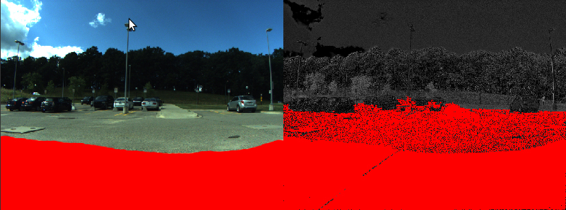
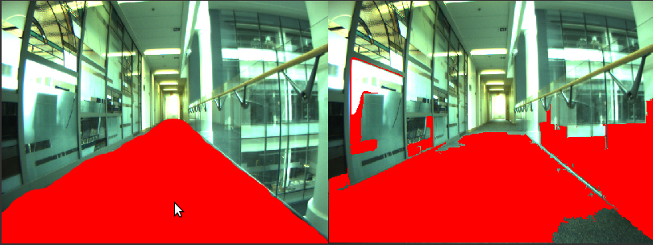
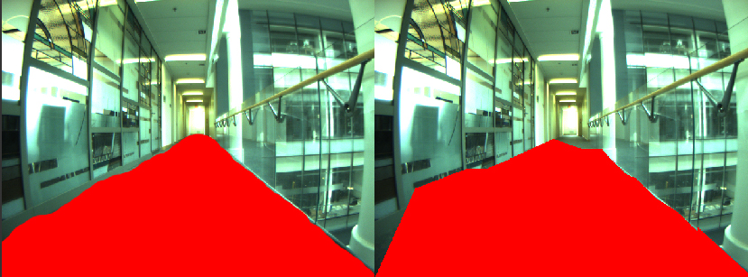
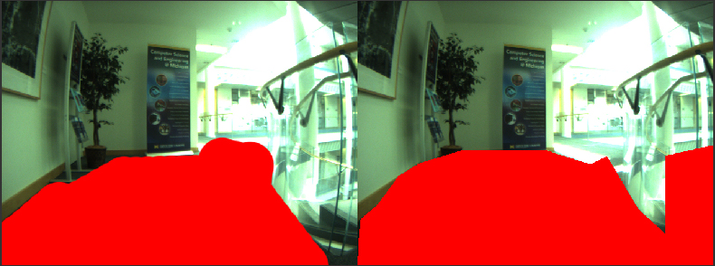
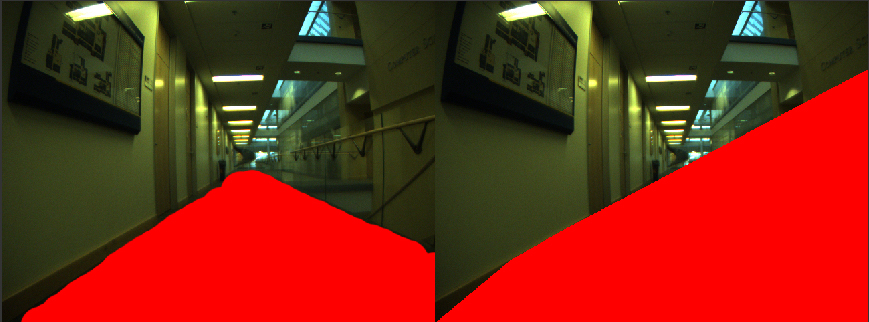
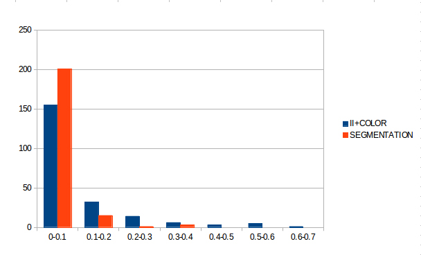
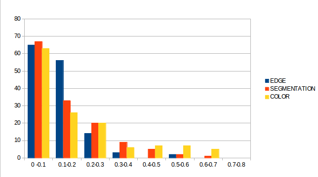

In order to have a better understanding of how my program behave on ground detection, I've been taking a bunch of screen shots (350 images in total) from the log and manually colored the ground area and comparing those with the result run by my program. Different methods were tested and here are some explanations for the methods I am using.
Color detection
set a small region at the bottom of the frame to construct the ground color model. Grow the neighboring pixels within the color range to get the ground area.
Image segmentation
use Felzenszwalb-Huttenlocher segmentation algorithm. cluster the image pixels with the similar property. I evaluate the color distribution difference between different cluster and merge the segmentation to represent the ground area.
Edge detection
use sobel edge detector to detect the ground edges and connect the edges to represent the ground.
Illumination invariant
use to remove the shadow's interference.
From above, I conclude that the illumination invariant + color detection gives the best result for the outdoor environment and the edge detection method gives the best result for indoor environment.
One thing to pay attention to is the false positive rate that means the not drivable being detected as drivable. For the outdoor environment, the false positive rate can be caused by the grey color of the road and the white color of the pedestrian can be shown the same in illumination invariant image as fig.1. Furthermore, just a personal opinion, even if the robot is currently driving on the pedestrian, it does not mean that the road is not drivable.
 Fig.1 left is the manually colored ground area and right is from the experiment resultFor indoor environment, edge detection methods gives the best ground detection performance. I chose this method over the color detection method because in the hallway a lot of area have the similar color as the ground area(fig2). Using the method would help to reduce the misclassification of those areas(fig3).
 Fig2. color detection and image segmentation fails to distinguish the ground area because of the similarity of the surrondings.  Fig3. problem solved by using the edge detection methodHowever, one limitation of the edge method is that in the environment when the ground area is in a more complicated shape(especially in the lab), the edges are less organized and some unnecessary area would be included. (fig.4) Another limitation is that when the environment is too dark, only few edges are being detected.(fig.5)
 Fig4. edge detection failed due to the complicated shape  Fig5. edge detection failed due to the dark environmentIn order to further analyze the false positive rate, I represent the frequency of false positive rate in the following chart and try to see if there are some extreme cases that increases the average value. (x-axis: false positive rate, y-axis: number of pics). We can see there does exist some outliers. For indoor hallway environment, when I remove the 9 pics that have the false positive rate above 20%, I got the false positive rate drops from 11.385% to 9.302%. For outdoor pedestrian environment, after removing the 12 pics with false positive rate above 30%, I got the false positive rate drops from 11.361% to 8.40%.
 Fig6. outdoor statistic  Fig7. indoor statisticFrom my point of view, above 90% correct coverage is pretty good. I am not sure about how well I did with the false positive rate. For the outdoor environment, I can also lower the false positive rate below 10% by sacrificing some correct coverage rate.
Any ideas or comments?
~Jasmine